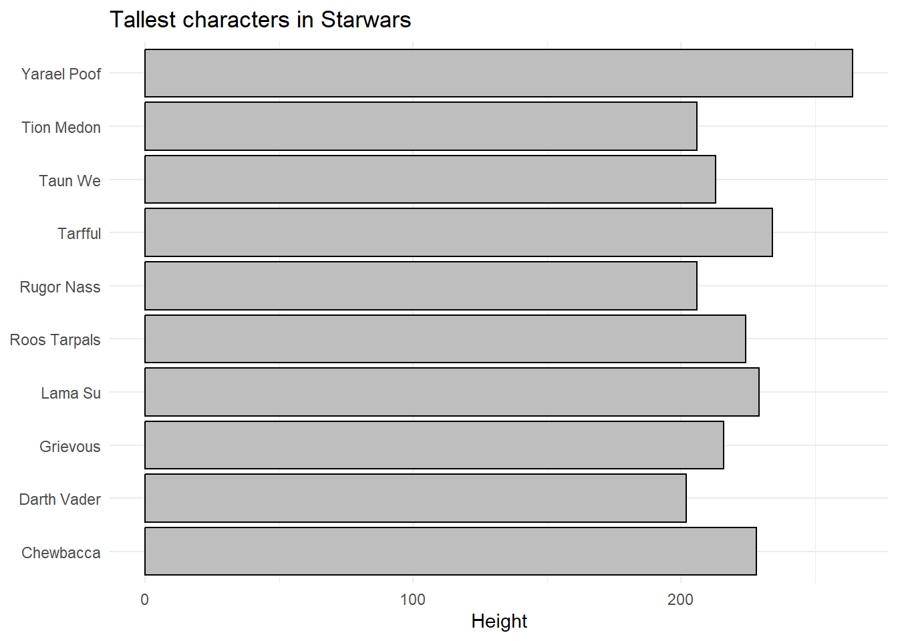
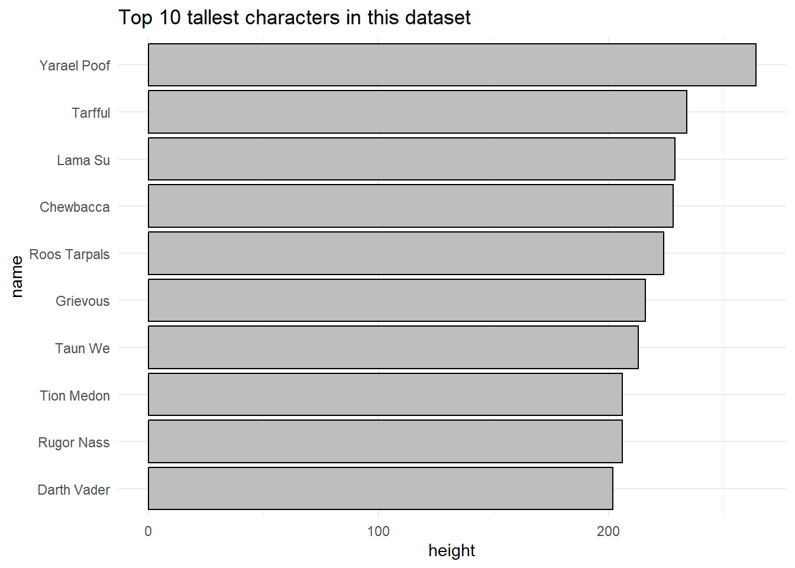

library(tidyverse)Hands-On Session: Math Camp Recap
In this detailed hands-on session, we will walk through some fundamental data manipulation tasks in R using the starwars dataset from the dplyr package, covering essential functions for summarizing, filtering, arranging, and visualizing data. Throughout the session, we will practice different ways to compute summary statistics, filter data, and generate plots, focusing on applying both base R and tidyverse syntax. The goal is to consolidate what you learned during Math Camp while expanding on the key techniques for data analysis.
We start by loading the necessary libraries, specifically tidyverse, which offers a collection of R packages designed for data science. This package will allow us to manipulate and visualize data in a clear and concise manner.
Next, Let’s calculate the total height of all characters in the dataset. We use the base R function sum to compute the sum of the height variable. This calculation includes the na.rm = TRUE argument to exclude missing values from the summation. Don’t worry thinking whether there is an intrinsic meaning or not to the output. We are doing this just for instructional purposes.
total_height <- sum(starwars$height, na.rm = TRUE)
total_height[1] 14143After obtaining the total height, we move to calculating the average height using the base R function mean. Again, the na.rm = TRUE argument ensures that missing values do not affect the calculation.
avg_height <- mean(starwars$height, na.rm = TRUE)
avg_height[1] 174.6049Now, we introduce the tidyverse syntax to achieve the same result, using the summarize function within a pipeline to calculate the average height. This approach is more readable and scalable for complex operations.
starwars |>
summarize(
avg_height = mean(height, na.rm = TRUE)
)# A tibble: 1 × 1
avg_height
<dbl>
1 175.Next, let’s compute the Body Mass Index (BMI) for each character by applying a transformation to the data. We use the mutate function to create a new variable, bmi, which is derived from the mass and height variables. Then, we select the characters’ names and their respective BMI values for display.
starwars <- starwars |>
mutate(bmi = mass / (height / 100)^2)
starwars |>
select(name, bmi)# A tibble: 87 × 2
name bmi
<chr> <dbl>
1 Luke Skywalker 26.0
2 C-3PO 26.9
3 R2-D2 34.7
4 Darth Vader 33.3
5 Leia Organa 21.8
6 Owen Lars 37.9
7 Beru Whitesun Lars 27.5
8 R5-D4 34.0
9 Biggs Darklighter 25.1
10 Obi-Wan Kenobi 23.2
# ℹ 77 more rowsWe can filter the dataset to identify tall characters whose height exceeds 200 cm. The filter function allows us to subset the data based on this condition.
tall_characters <- starwars |>
filter(height > 200)
tall_characters# A tibble: 10 × 15
name height mass hair_color skin_color eye_color birth_year sex gender
<chr> <int> <dbl> <chr> <chr> <chr> <dbl> <chr> <chr>
1 Darth V… 202 136 none white yellow 41.9 male mascu…
2 Chewbac… 228 112 brown unknown blue 200 male mascu…
3 Roos Ta… 224 82 none grey orange NA male mascu…
4 Rugor N… 206 NA none green orange NA male mascu…
5 Yarael … 264 NA none white yellow NA male mascu…
6 Lama Su 229 88 none grey black NA male mascu…
7 Taun We 213 NA none grey black NA fema… femin…
8 Grievous 216 159 none brown, wh… green, y… NA male mascu…
9 Tarfful 234 136 brown brown blue NA male mascu…
10 Tion Me… 206 80 none grey black NA male mascu…
# ℹ 6 more variables: homeworld <chr>, species <chr>, films <list>,
# vehicles <list>, starships <list>, bmi <dbl>Once we have the subset of tall characters, we sort them in descending order of height using the arrange function, and then display only their names and heights. The desc function ensures that the tallest characters appear at the top.
tall_characters |>
arrange(desc(height)) |>
select(name, height)# A tibble: 10 × 2
name height
<chr> <int>
1 Yarael Poof 264
2 Tarfful 234
3 Lama Su 229
4 Chewbacca 228
5 Roos Tarpals 224
6 Grievous 216
7 Taun We 213
8 Rugor Nass 206
9 Tion Medon 206
10 Darth Vader 202We then perform grouping and summarizing to calculate the average height for each species in the dataset. The group_by function groups the data by species, and summarise computes the average height within each group.
avg_height <- starwars |>
group_by(species) |>
summarise(
avg_height = mean(height, na.rm = TRUE)
)
avg_height# A tibble: 38 × 2
species avg_height
<chr> <dbl>
1 Aleena 79
2 Besalisk 198
3 Cerean 198
4 Chagrian 196
5 Clawdite 168
6 Droid 131.
7 Dug 112
8 Ewok 88
9 Geonosian 183
10 Gungan 209.
# ℹ 28 more rowsIn another example, we use group_by and mutate to create a new column mean_grouped, which stores the average height for each species directly within the dataset. This doesn’t modify the level of the dataset.
starwars |>
group_by(species) |>
mutate(
mean_grouped = mean(height, na.rm = TRUE)
)# A tibble: 87 × 16
# Groups: species [38]
name height mass hair_color skin_color eye_color birth_year sex gender
<chr> <int> <dbl> <chr> <chr> <chr> <dbl> <chr> <chr>
1 Luke Sk… 172 77 blond fair blue 19 male mascu…
2 C-3PO 167 75 <NA> gold yellow 112 none mascu…
3 R2-D2 96 32 <NA> white, bl… red 33 none mascu…
4 Darth V… 202 136 none white yellow 41.9 male mascu…
5 Leia Or… 150 49 brown light brown 19 fema… femin…
6 Owen La… 178 120 brown, gr… light blue 52 male mascu…
7 Beru Wh… 165 75 brown light blue 47 fema… femin…
8 R5-D4 97 32 <NA> white, red red NA none mascu…
9 Biggs D… 183 84 black light brown 24 male mascu…
10 Obi-Wan… 182 77 auburn, w… fair blue-gray 57 male mascu…
# ℹ 77 more rows
# ℹ 7 more variables: homeworld <chr>, species <chr>, films <list>,
# vehicles <list>, starships <list>, bmi <dbl>, mean_grouped <dbl>To find the tallest species, we can arrange the summarized dataset by average height in descending order, extract the top entry, and use the pull function to display only the species name.
avg_height |>
arrange(desc(avg_height)) |>
head(1) |>
pull(species)[1] "Quermian"Finally, let’s use ggplot2 for visualization. First, we create a bar chart to display the tallest characters by height. The ggplot function initializes the plot, and geom_col adds the bars, with black borders and gray fill. We also use labs to label the axes and add a title to the plot, and theme_minimal to apply a clean, minimalistic theme.
tall_characters |>
ggplot(
aes(
x = height,
y = name
)
) +
geom_col(color = "black", fill = "grey") +
labs(
x = "Height",
y = NULL,
title = "Tallest characters in Starwars"
) +
theme_minimal()
In another visualization, we reorder the character names by height using fct_reorder from the forcats package, ensuring that the tallest characters are displayed at the top of the plot. The structure is similar to the previous plot, but here we include reordering to enhance clarity.
tall_characters |>
mutate(name = fct_reorder(name, height)) |>
ggplot(
aes(
x = height,
y = name
)
) +
geom_col(color = "black", fill = "grey") +
labs(title = "Top 10 tallest characters in this dataset") +
theme_minimal()
All the best with your first Problem Set!